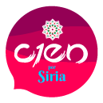
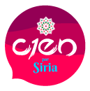

100 x Siria es la campaña de Proyecto Habesha que ofrece la oportunidad de hacer algo por la juventud siria cuyo futuro académico se encuentra en colapso.
Con tu contribución mensual de 100 pesos o más, podremos ofrecerles a nuestros beneficiarios un estipendio mensual que les permitirá contar con lo esencial para vivir durante sus estudios.
 
